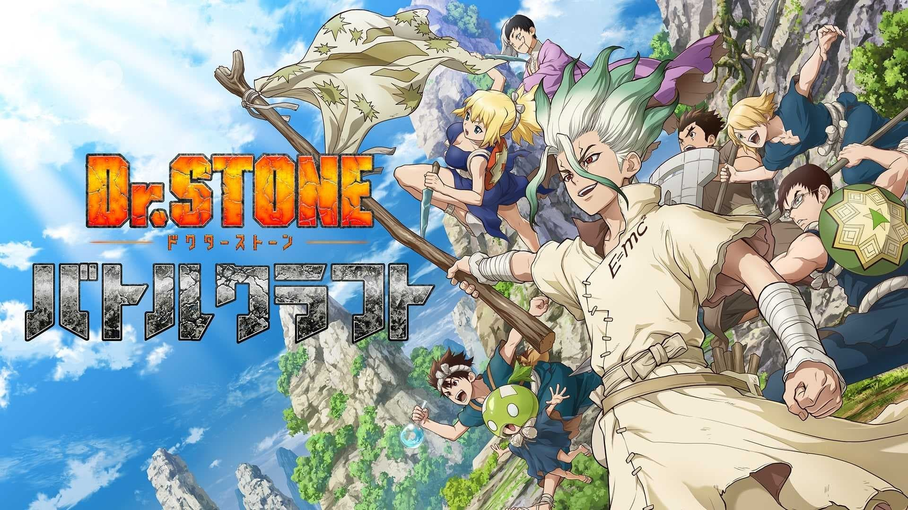
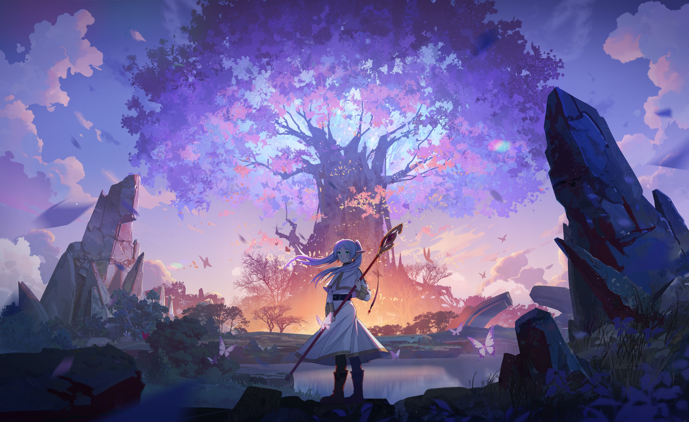

Anime itu basically kartun atau serial animasi yang asalnya dari Jepang. Cuma, anime nggak kayak
kartun biasa yang sering kita tonton di TV, karena biasanya anime punya cerita yang lebih
kompleks, karakter yang lebih mendalam, dan genre yang lebih beragam, mulai dari action, drama,
romance, fantasy, sampai yang lebih berat kayak psikologis atau filosofi. Bukan cuma anak-anak
aja yang nonton, tapi orang dewasa juga banyak yang suka karena tema-temanya bisa sangat relate
dan nyentuh berbagai sisi kehidupan. Jadi, anime tuh lebih dari sekadar hiburan, kadang bisa
jadi pengalaman yang bikin kita mikir atau baper.
Dan dibawah ini adalah anime yg aku rekomendasikan:
Re:zero
Genre: Isekai, Drama, Fantasi, Petualangan
Tema: Pengorbanan, kematian, dan perjuangan untuk melindungi orang yang kita cintai.
Subaru Natsuki, seorang remaja biasa, tiba-tiba dibawa ke dunia lain setelah keluar dari sebuah
toko. Di dunia baru ini, ia diserang oleh monster dan berakhir dibunuh. Namun, Subaru terkejut
karena ia bangkit kembali di titik awal kehidupan di dunia tersebut setiap kali ia mati, dalam
sebuah fenomena yang disebut "Return by Death." Kejadian ini tidak hanya memengaruhi Subaru,
tetapi
juga orang-orang di sekitarnya, karena dia ingat semua yang terjadi, meskipun orang lain tidak.
Subaru berusaha menggunakan pengetahuan yang ia miliki dari kematian-kematian sebelumnya untuk
menyelesaikan berbagai masalah yang ada di dunia baru ini. Ia bertemu dengan berbagai karakter
penting, seperti Emilia, seorang gadis dengan garis keturunan kerajaan yang ingin menjadi ratu,
dan
Rem serta Ram, dua gadis yang bekerja untuk keluarga Roswaal. Subaru menghadapi banyak
tantangan,
termasuk menghadapi ancaman dari berbagai entitas gelap dan tragedi pribadi yang harus ia
selesaikan
dengan cara yang sangat emosional.
Konflik utama dalam cerita adalah bagaimana Subaru menggunakan kemampuan "Return by Death" untuk
mencegah berbagai tragedi dan mencari cara agar dunia tidak jatuh ke dalam kekacauan, meskipun
dengan konsekuensi yang besar bagi dirinya. Setiap kali ia mati, ia harus merasakan rasa sakit
dan
kehilangan, dan belajar dari pengalaman tersebut, seringkali menantang moralitasnya.
Dr. Stone

Genre: Sci-Fi, Petualangan, Pendidikan
Tema: Ilmu pengetahuan, peradaban, dan perjuangan untuk membangun kembali dunia.
Dunia tiba-tiba dilanda fenomena misterius yang mengubah seluruh umat manusia menjadi batu.
Berabad-abad berlalu, dan sebagian besar dunia kini hancur tanpa kehidupan. Namun, seorang
remaja
bernama Senku Ishigami, seorang jenius dengan minat besar terhadap ilmu pengetahuan, terbangun
dari
kondisi batu ini dan memulai upaya untuk menghidupkan kembali peradaban. Senku, dengan
pengetahuan
ilmu pengetahuan yang sangat luas, berniat untuk membangun kembali dunia dengan teknologi dan
penemuan yang bisa menghidupkan kembali umat manusia.
Senku dibantu oleh teman masa kecilnya, Taiju Oki, dan seorang gadis bernama Yuzuriha Ogawa.
Bersama-sama, mereka membangun kembali dasar-dasar teknologi mulai dari alat-alat sederhana,
seperti
pisau dan bahan bakar, hingga penemuan yang lebih besar seperti mesin cetak dan telekomunikasi.
Selama perjalanan mereka, mereka bertemu dengan berbagai kelompok orang yang memiliki pemikiran
dan
tujuan yang berbeda.
Salah satu kelompok yang mereka temui adalah "Kerajaan Sains" yang dipimpin oleh Senku, yang
berjuang untuk membangun peradaban ilmiah di tengah kekacauan. Namun, mereka juga menghadapi
kelompok yang dipimpin oleh Tsukasa Shishio, seorang pemuda dengan pandangan dunia yang berbeda,
yang berusaha membangun dunia baru dengan cara yang lebih kejam dan primitif. Pertempuran antara
kedua kelompok ini menjadi inti dari konflik utama dalam cerita, yang menyoroti perbedaan
pandangan
tentang bagaimana dunia baru harus dibangun.
Frieren

Genre: Drama, Fantasi, Petualangan
Tema: Waktu, kehilangan, persahabatan, dan perenungan hidup.
Setelah mengalahkan Raja Iblis, Frieren, seorang penyihir yang sangat kuat, kembali ke dunia
bersama
tiga rekan petualang lainnya: Himmel, Eisen, dan Kranz. Namun, meskipun petualangan mereka telah
berakhir, Frieren, yang merupakan seorang manusia yang hidup sangat lama, mulai merasakan
kekosongan. Sementara rekan-rekannya hidup seperti biasa, Frieren menyadari bahwa ia tidak
sepenuhnya menghargai perjalanan dan hubungan yang telah mereka jalani bersama.
Ketika para rekannya mulai menua dan meninggal, Frieren merasa sangat kehilangan, terutama
karena ia
tidak pernah benar-benar memahami arti sejati dari pertemanan atau mengungkapkan perasaan kepada
mereka. Untuk mencari jawaban tentang hidup dan makna waktu, Frieren memutuskan untuk melakukan
perjalanan lagi. Dalam perjalanan ini, ia bertemu dengan seorang murid muda bernama Himmel yang
sangat mirip dengan teman lamanya, dan mereka mulai berkeliling dunia bersama.
Seri ini lebih berfokus pada perenungan kehidupan, mengatasi kehilangan, dan bagaimana kita
melihat
waktu dalam hubungan. Meskipun secara teknis dunia ini masih dalam setting fantasi, elemen
petualangan sering kali mengarah pada eksplorasi emosi dan pertumbuhan karakter, terutama bagi
Frieren yang berusaha mencari pemahaman lebih dalam tentang hidupnya yang panjang.
Dark Gathering
Genre: Horor, Misteri, Supernatural
Tema: Ketakutan, misteri, dan hubungan manusia dengan dunia gaib.
Keiji, seorang remaja yang memiliki kemampuan untuk melihat roh, kembali ke dunia yang penuh
dengan
entitas supernatural setelah tragedi yang melibatkan sahabatnya. Sebelumnya, Keiji pernah
mengalami
pengalaman traumatis dengan hantu yang membuatnya menjauh dari dunia supranatural. Namun, takdir
membawanya kembali ke dunia itu, di mana ia bertemu dengan seorang gadis bernama Yuko, yang juga
tertarik dengan hal-hal yang berkaitan dengan dunia gaib.
Mereka berdua, bersama dengan beberapa karakter lainnya, menyelidiki kasus-kasus misterius yang
melibatkan hantu, roh, dan kekuatan gelap. Keiji harus menghadapi rasa takut dan trauma dari
masa
lalunya, serta menemukan cara untuk mengendalikan kemampuan paranormal yang dimilikinya. Namun,
semakin dalam mereka menyelidiki, semakin mereka terlibat dalam konspirasi gelap yang lebih
besar,
di mana bukan hanya roh yang harus mereka hadapi, tetapi juga ancaman dari entitas yang lebih
kuat.